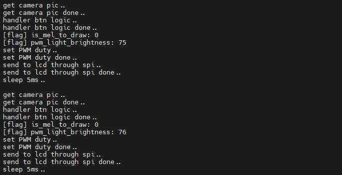
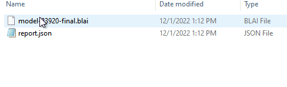

中文
中文M1s DOCK 上手
更新历史
| 日期 | 版本 | 作者 | 更新内容 |
|---|---|---|---|
| 2023-05-09 | v0.5 | wonder |
|
| 2023-02-27 | v0.4 | wonder |
|
| 2022-12-20 | v0.3 | wonder |
|
开箱
下面地开箱说明以 M1S Dock 带屏幕和摄像头的套餐为例。
打开 M1S Dock 的包装盒后，看到里面有如下内容：
- 一根 USB 数据线
- 一块 M1S Dock
- 两条排针

硬件准备
- 两根 TypeC 数据线
- 一个 M1s Dock
- 一台电脑
M1S Dock 搭载有两个 TypeC 接口。默认情况下 UART 口用做于电脑和 M1S Dock 的串口通信，OTG 口默认用于给板子上的 BL808 芯片里面的 C906 核心烧录固件。

- 上图中可以看到
S1、S2两个按键，另外还有BOOT按键和RST按键 - 上图中板子的左下角有 UART 口，默认有 USB 转双串口功能连接到 BL808 芯片的两个核心上
- 上图中板子的右下角有 OTG 口，M1s Dock 默认固件将它作用于烧录 C906 核心的固件。
上电说明
初次通电
板卡现象
首次对 M1s Dock 板子上电，按下板子上的 RST (复位) 按键。

会有如下现象：
- 按下 ① 处所指向的按键，屏幕上 ④ 处
btn会变成绿色，并且 ⑥ 处的数字会增加，最大为 100 - ② 是摄像头，屏幕会默认显示摄像头所拍摄到的画面
- 按下 ③ 处所指向的按键，屏幕上另一个
btn会变成绿色，并且 ⑥ 处的数字会减小，最小为 0 - ⑤ 是出货时所测试的无线 wifi 功能及其强度检测，用户手中此处空白
- ⑦ 是板载麦克风测试，麦克风在背面位于板载 LED 的对称位置
另一面的 LED 会闪烁。

OTG 口现象
通过 OTG 口连接 PC 的话会有一个大小为 3M 的 U 盘。
部分电脑可能会因为兼容性问题显示不出来这个 U 盘，但是可以通过串口烧录 来重新烧录一次 M1s Dock 来解决该问题。

并且在 Windows 的设备管理器中会看到大容量存储设备，在 linux 系统中也会出现一个可移动设备。
如果没有看到大容量存储设备或者 U 盘在电脑中显示，可以先更换数据线或者链接电脑其他 USB 接口来尝试解决问题，仍然看不到的话可以跳转到 串口烧录 来重新烧录一次 M1s Dock 来解决该问题；烧录的时候并且勾选烧录 partition table, boot2, firmware 三个选项，烧录结束后重新将板子连接电脑。
UART 口现象
通过 UART 口连接 PC 会显示有两个串口设备

并且在 Windows 系统的设备管理器中可以看到两个 Converter 设备。
没有串口设备的话更换 USB 数据线或者使用电脑别的 USB 口。
依旧没有的话可以查看 给板载 bl702 进行烧录 相关的内容来给 bl702 重新烧录一次固件。在 M1s Dock 上，我们使用 bl702 芯片作为 USB 转双串口芯片，由于某些原因串口功能不能正常使用的时候，可以重新烧录固件来解决这个问题。
只有一个串口设备的话也可以查看 给板载 bl702 进行烧录 章节并且重新烧录 bl702 来解决问题。
设置波特率为 2000000，分别打开两个串口，会看到不同的信息。
打开小号串口可以看到一直在打印信息：

打开大号串口可以进行简单的命令行交互：

烧录方法
想要让板子运行自己预期的程序，就要先知道怎么样烧录固件到板卡。
U 盘烧录
为了便捷烧录，我们准备了 U 盘烧录的方法来给快速地烧录 M1s Dock 上 bl808 的 C906 核心所运行的程序。
先使用 TypeC 数据线将电脑与板子的 OTG 口连接起来，再同时按住板子上面两侧的按键（已经在下面图片中指明），然后按一下板子上的 RST 键就可以进入 U 盘烧录模式。
 |
同时按住两侧的按键然后按一下 RST 键来复位板子，并让它进入 U 盘烧录模式 |
另外，按住两侧按键的时候，从板子的 OTG 口板子给板子通电来启动板子也可以进入 U 盘下载模式。

板子成功进入 U 盘烧录模式后在电脑上会显示出一个容量很小的磁盘，直接把固件 点我跳转部分例程固件 拖拽进去即可完成烧录。
文件存放进去后数秒后板子会重启，U 盘被弹出，表示烧录完成。
但是因为 bl702 固件的差异，可能需要按下 RST 按键才能成功加载固件。点我查看 bl702 固件差异 。
串口烧录
上面的 U 盘烧录方法适用于给 C906 核心烧录固件。当板子出现固件异常或者需要将板子的固件全部升级时，我们需要通过串口烧录这种方法来重新烧录 M1s Dock, 这可以解决所有问题。
使用 TypeC 数据线将电脑与板子的 UART 口连接起来，此时电脑上会出现两个串口 (如果出现鼠标不能动的现象请拔掉 USB 并且查看 更新板载 bl702 固件 相关内容来修复问题)。
软件获取
给 M1s 烧录需要用到博流官方烧录工具，前往 https://dev.bouffalolab.com/download 下载名称为 Bouffalo Lab Dev Cube 的文件。解压后就得到了用来烧录板子的应用程序。

备份链接：Sipeed 下载站
解压后的文件夹中有 BLDevCube、 BLDevCube-macos 和 BLDevCube-ubuntu 三个文件，用于在不同系统启动这个图形化烧录工具。

还有 bflb_iot_tool、bflb_iot_tool-macos、bflb_iot_tool-ubuntu 这三个程序，用于在不同系统通过命令行进行烧录。
图形化界面烧录
根据自己的系统启动软件 BLDevCube 后选择 bl808 ，紧接着软件的 IOT 页面选择分区表文件点我下载（图里 ②）。
 |
选择完上面的分区表文件后，烧录工具的可选项就变多了，主要关注 boot2, firmware, d0fw 三项。

上图中，boot2 是固定的，位于 BLDevCube\chips\bl808\builtin_imgs\boot2_isp_bl808_xxxx_xxx 目录下，就是在解压的烧录程序文件夹的子目录里面，要选择名称带有 debug 的文件；firmware 是 E907 核心运行的固件 ；d0fw是 C906 核心运行的固件，前面的 U 盘烧录里面的固件就是给这个核心烧录的。E907 的固件文件和 C906 的固件文件均可以通过 M1s_dock example 来编译得到。
首次烧录 firmware 和 boot2 都需要烧录进去，之后就可以按需烧录而不用全部勾选。
旧默认固件可以在 这里下载到，新默认固件不再提供。对应的旧默认固件测试方法查看 旧固件测试
正确的选择固件后，在窗口右侧点击一下 Refresh 来刷新串口，正常情况有两个串口号相邻的串口可供选择，如果没有两个串口请参考下面的 烧录 BL702来查看解决方法。在本烧录应用中，对 M1s Dock 操作均需要通过串口号较大的串口，而不是小号串口。

按住板子上的 BOOT 键和 RST 键， 然后先松开 RST 键再松开 BOOT 键来使板子进入串口烧录模式。

点击下载 (Create & Download) 后会看到下图箭头中多指向的信息，在这之前我们需要操作硬件使它进入串口烧录模式。
成功进入烧录模式会握手成功并且接下来会进行烧录。


握手失败的话就重新点击烧录并且再次尝试。这种错误可能是按键释放顺序错误（应该先松开 RST 键再松开 BOOT 键，即在松开 RST 键的时候 boot 键应该是按下的状态）而导致板子没有进入串口烧录模式，软件等待超时而导致的。

命令行烧录
我们可以使用命令行来通过板子上的串口来对 M1s Dock 进行烧录。
在 BLDevCube 的文件夹下面，还有 bflb_iot_tool、bflb_iot_tool-macos、bflb_iot_tool-ubuntu 这三个程序，用于在不同系统通过命令行进行烧录。
下面是在 Windows 系统中通过命令行烧录的命令。其中 firmware 是 E907 核心的固件，可以在旧默认固件处下载得到；pt 文件是分区表文件，默认在 M1s_BL808_example\partition 目录下，当然也可以 点我 直接下载到；boot2 文件默认位于 BLDevCube\chips\bl808\builtin_imgs\boot2_isp_bl808 目录下，是名称带有 debug 的文件；波特率为 2M，这样烧录的时候会快点；port 应指定为串口号较大的串口。
.\bflb_iot_tool.exe --chipname=bl808 --port=COM38 --baudrate=2000000 --firmware="firmware_20221212.bin" --pt="M1s_BL808_example\partition\partition_cfg_16M_m1sdock.toml" --boot2="BLDevCube\chips\bl808\builtin_imgs\boot2_isp_bl808\boot2_isp_debug.bin"
当然，在烧录前需要让 M1s Dock 进入下载模式：按住板子上的 BOOT 键和 RST 键， 然后先松开 RST 键再松开 BOOT 键。

烧录完之后，可以参考前面的 U 盘烧录 来给 C906 核心烧录固件。也可以自己根据烧录地址来烧录固件，烧录地址可以在 partition_cfg_16M_m1sdock.toml 文件查看到，也可以自己更改，此处不述。
烧录时候的常见问题
BFLB IMG LOAD SHAKEHAND FAIL
这种情况是板子的 bl808 没有进入下载模式，确定自己在板子在运行时（已经通电）自己同时按下 RST 按键和 BOOT 按键，然后先松开 RST 键后松开 BOOT 键来时 bl808 进入下载模式。

并且确定自己在下载的时候选择的是串口号大的那一个串口，而不是小号串口。
只看到一个串口
这种情况是进入了板载 bl702 下载模式。需要注意的是不应该按住 BOOT 键然后给板子通电，这样会进入 bl702 的下载模式，只有一个串口显示在电脑中。给 bl808 通过串口烧录是在板子通电后，同时按下 RST 按键和 BOOT 按键，然后先松开 RST 键后松开 BOOT 键来时 bl808 进入下载模式。

没有串口设备
确定自己连接的是板子上的 UART 接口，换一根数据线或者连接电脑另一个 USB 口。
烧录单个固件
在烧录工具软件中，首次烧录要求将 partition table, boot2, firmware, d0fw 文件都勾选上并烧录进板子，以后如果想要烧录由 SDK 编译出来的单个固件，在对应的烧录选项中选择编译出来的文件就行：
firmware 选择由 e907_demo 编译出来的最终固件。
d0fw 选择由 c906_demo 编译出来的最终固件。
partition table 和 boot2 每次烧录都要勾选中。
| 烧录 c906_demo 固件 | 烧录 e907_demo 固件 |
 |
烧录例程
下面的几个 Demo 都是从 M1s_bl808_example 里面编译出来的，适用于 bl808 里面的 C906 核心。
建议使用 U 盘烧录的方法烧录进板卡，直接体验一下这款板卡。
lvgl_demo
LVGL (轻巧而多功能的图形库)是一个免费的开放源代码图形库，适合用于 mcu 构建图形界面。
Demo 文件：点我
通过 U 盘烧录的方法烧录进 M1s Dock 后，屏幕显示着 lvgl 测试效果，设置波特率为 2000000，串口号较小的串口打印着最后一次触摸屏幕位置。

image_processing_demo
一个简单的图像处理例子。
Demo 文件：点我
通过 U 盘烧录的方法烧录进 M1s Dock 后，屏幕上显示摄像头画面，按下两侧的按键可以切换不同的图像算子。设置波特率为 2000000，串口号较小的串口显示着上次按键和其他信息。
按下复位键后串口号较小的串口会显示摄像头相关的配置信息，摄像头异常的话可以从串口信息看到。

tinymaix_mnist_demo
TinyMaix 是面向单片机的超轻量级的神经网络推理库，即 TinyML 推理库，可以在任意单片机上运行轻量级深度学习模型。
Demo 文件：点我
通过 U 盘烧录的方法烧录进 M1s Dock 后，屏幕中间的红框识别数字。设置波特率为 2000000，串口号较小的串口打印着识别信息。


pikascript_demo
PikaScript 是一个跨平台的超轻量级嵌入式 Python 引擎。
Demo 文件：点我
通过 U 盘烧录的方法烧录进 M1s Dock 后，屏幕白屏，无内容。设置波特率为 2000000，打开串口号较小的串口来进行命令行交互。
在命令行中输入这些指令：
arc = lv.arc(lv.scr_act())
arc.set_end_angle(200)
arc.set_size(150, 150)
arc.center()

然后可以看到屏幕上显示出来一些画面（忽略这糟糕的拍照）：

SDK 编译
M1s 需要在 Linux 环境下进行编译
安装编译所需要的相关软件
获取 SDK 需要用到 git 这个软件，编译 SDK 需要用到 make 这个软件，对应着后面文档检查自己的目录结构配置的时候需要用到 tree 这个软件。
下面是在 debian 系 Linux 发行版（比如 Ubuntu）中安装上述三个软件的示例命令。
sudo apt-get install git make tree build-essential
其它 Linux 发行版本安装上述所需的三个软件所使用的命令自行网上查找解决。
获取例程仓库
git clone https://gitee.com/Sipeed/M1s_BL808_example.git
最终结构树如下 tree -L 1 M1s_BL808_example/
获得 SDK 仓库
仓库很大，120M 以上。
git clone https://gitee.com/sipeed/M1s_BL808_SDK.git
最终结构树如下 tree -L 1
在 SDK 仓库文件夹下，获取编译工具链
根据例程仓库里面的 readme 的要求，工具链应存放在 M1s_BL808_SDK/toolchain 目录下
mkdir -p M1s_BL808_SDK/toolchain
cd M1s_BL808_SDK/toolchain
git clone https://gitee.com/wonderfullook/m1s_toolchain.git
修改工具链的名称为 Linux_x86_64 ，然后返回到上两级目录
mv m1s_toolchain Linux_x86_64
cd ../../
这时得到的结构树应如下(截取部分)：tree -L 2
配置编译工具链路径
首先确定 M1s_BL808_SDK 文件夹所在的路径：
cd M1s_BL808_SDK
pwd
我们复制上面执行 pwd 后的结果（每个人的会不一样），比如上面截图中的 pwd 命令的执行结果为 /home/lee/bl808/M1s_BL808_SDK，因此在配置 BL_SDK_PATH 路径时后面应该跟着 /home/lee/bl808/M1s_BL808_SDK。
以后每次开始编译都需要执行一次这个来配置下编译工具链路径（注意自行修改 BL_SDK_PATH 的值，并且 = 符号后面没有空格）
export BL_SDK_PATH=
然后执行下面的命令就可以准备开始交叉编译了。
注意是 M1s_BL808_SDK ，不是 M1s_BL808_SDK/，一般自动补全会导致这个错误。
编译 demo
执行 M1s_BL808_example/c906_app 目录下的 build.sh ，后面追加上想要编译的 demo 就可以完成了。
Demo 如下（编辑于 2022-12-13）：
下面是编译 lvgl_demo 的示例命令，其他 demo 的编译自己更改 ./build.sh 后面的名称。
cd M1s_BL808_example/c906_app
./build.sh lvgl_demo
然后编译出来的固件就会在 M1s_BL808_example/c906_app/build_out 目录下，名称为 d0fw.bin，通过虚拟 U 盘拖拽烧录即可。
虚拟 U 盘找不到的话也可以通过博流官方烧录工具来使用串口下载，注意在 d0fw 框中应当勾选自己所编译出来的 d0fw.bin （下图仅做示例）
编译 firmware
执行 M1s_BL808_example/e907_app 目录下的 build.sh ，后面追加上 firmware 就可以编译了
cd M1s_BL808_example/e907_app
./build.sh firmware
然后编译出来的固件就会在 M1s_BL808_example/e907_app/build_out 目录下，名称为 firmware.bin。
通过博流官方烧录工具来使用串口下载，注意在 firmware 框中应当勾选自己所编译出来的firmware.bin （下图仅做示例）
常见问题
执行完 build.sh 后提示
Makefile:14: *** BL_SDK_PATH not found, please enter: export BL_SDK_PATH={sdk_path}. Stop.，查看 配置编译工具链路径 来配置自己的 BL_SDK_PATH。编译出错
注意编译的时候使用的命令为
./build.sh demo_name，比如./build.sh hello_world，而不是./build.sh hello_world/（注意最后面的路径符号/）
WIFI 串流摄像头 DEMO
一个简单的无线串流 Demo
软件环境
网络环境： PC 与板卡需要在同一网络环境中；M1s Dock 支持 2.4G 无线网络
PC 软件环境：python3， OpenCV
板卡固件要求：要求 Firmware 固件为 firmware_20230227.bin，通过烧录方法中的 串口烧录 说明的内容烧录 Firmware 固件
代码修改
打开例程路径 M1s_BL808_example/c906_app/camera_streaming_through_wifi 中的 main.c 文件。

注意到里面的 m1s_xram_wifi_connect() 和 m1s_xram_wifi_upload_stream() 函数。
- 手动将
liuxo_desktop要连接到的 PC 已经连接上的网络，并且将12345678更改为目标网络的连接密码。 - 将
10.42.0.1替换成 PC 所在目标网络中的 IP 地址。
比如在下面的示例中，PC 所在的名为 Test 网络中的 IP 为 192.168.43.183，并且名为 Test 的无线网络密码是 testtest。

编辑完 main.c 文件后记得保存一下。
固件编译和烧录
修改代码且保存后，根据上面的 SDK 编译说明 来编译 camera_streaming_through_wifi 这个例程。
将编译得到的 d0fw.bin 固件通过 U 盘烧录的方式来快速的烧入到 M1s Dock 里面，打开大号串口，按下板子上面的复位键。
在板子成功连接到网络后它会在大号串口打印出自己的 IP 信息，并且 Socket connect 表示正在等待 PC 端应答。

PC 显示流
在 M1s_BL808_example/c906_app/camera_streaming_through_wifi 路径下，直接执行命令 python3 main.py 来使用 python 接收 M1s dock 的流并且调用 opencv 来显示画面。
注意事项
- 确认自己对 M1s Dock 烧录了修复 bug 后的 firmware_20230227.bin 固件
- 确定板子连接到了目标网络；成功连接到网络后板子的大号串口会显示出板卡的 IP 地址
- 确定板子与 PC 在同一网络，且正确地修改了
main.c中 PC 的 IPV4 地址
Linux Demo
这是一个能在 M1s Dock 上能运行起来的简易 Linux Demo。
点我 下载 Linux 例子，按照压缩包里面 steps.md 操作步骤完成 Linux 系统烧录。

使用 root 登录
查看 CPU 信息

相关的 Linux SDK 前往 github 查看。
使用 Jtag
可以在淘宝店铺购买到 Jtag 调试器来调试 M1s Dock.
连接设备
将 Jtag 插入到板子的 TF 卡槽中来连接设备。自弹式 TF 卡槽可以自动固定连接，尽量减少硬插拔避免 TF 卡槽损坏。
连接后的样式如下图所示。


调试器和 M1s Dock 的 UART 口都需要与电脑连接上（如上图，板子上的 UART 口和调试器都连接了电脑）；仅调试器连接电脑会因为需要给 M1s Dock 供电而导致调试器很烫，并且我们需要通过串口在 M1s Dock 上开启 Jtag 功能才能调试。
安装驱动
前往 下载站 下载适合自己电脑的驱动。
Windows
解压 T-Head-DebugServer-windows 压缩包后，运行解压后的 Setup 程序来安装驱动。

在确定安装目录界面，建议不要更改默认的安装位置。避免因错误安装到根目录后，卸载该程序导致全盘清空的悲剧。
全部都安装，避免以后还需要别的组件。
安装结束后，连接上了调试器的话可以在设备管理器中看到有 CKlink-Lite。

桌面上有一个调试软件的图标。
Linux
获得驱动：点我

解压所下载的压缩文件。
tar xvf T-Head-DebugServer*
然后当前目录下会多出一个脚本文件。

执行一下脚本，会显示说明，可以知道在脚本后面加上 -i 会安装软件，加上 -u 会卸载软件。
./T-Head-DebugServer-linux-x86_64-V5.16.5-20221021.sh

开始安装驱动：
sudo ./T-Head-DebugServer-linux-x86_64-V5.16.5-20221021.sh -i
上图中有两处是我们手动输入的 yes ，在 Set full installing path 处直接回车确认的话它会被安装到默认路径下，有需要的话自己指定一下安装路径。
安装完后使用 lsusb 可以查看到 CKlink-Lite 设备。

调试设备
在调试设备前，我们需要先通过 M1s Dock 上面的大号串口来操作板子，开启板子的调试功能。
从上面可以看到有两个 jtag 选项，执行 jtag_cpu0 就会对 C906 核心进行调试，执行 jtag_m0 就是对 E907 核心进行调试。
Windows
运行前面安装驱动后在桌面上的 T-HeadDebugServer 程序，出现下面的提示的话说明没有连接上设备，可以自己检查：
- 确定已经在串口里面使能了核心的 jtag 调试
- 设备管理器里面的
CKlink-Lite设备，没有的话检查核心板与电脑的连接情况或者重新安装驱动 - 调试器已经被其他 T-HeadDebugServer 程序打开
点击下图箭头指向的 三角标志 可以连接设备：
出现下图所示的 Failed 的话说明连接失败，端口不可用，可以自己设置端口来连接设备。
选择 Socket Setting，设置合适的端口。


成功连接上的话箭头所指的地方会从 三角形 变成 圆形。

到这里已经完成连接了，上面的图里是使用 jtag_m0 命令来调试 E907 核心，需要的话可以使用 jtag_cpu0 命令更改成调试 C906 核心。
接下来就可以用 gdb 等工具来调试了。
此外，在调试工具的安装目录下，有命令行程序 DebugServerConsole。
使用命令行执行可以看到用法并且操作它。
.\DebugServerConsole.exe -h
.\DebugServerConsole.exe -port 65535

就可以通过 65535 端口来调试了。
Linux
使用 DebugServerConsole -h 可以查看使用帮助。

在命令行运行命令后，可以通过 12345 端口来调试了。
DebugServerConsole -port 12345

blai npu
支持算子
| Type | Operators | Applicable Subset Spec. | Processor |
|---|---|---|---|
| Convolution | Conv | Kernel: 1x1,3x3,5x5,7x7 | :strong:NPU |
| Stride: 1x1, 2x2 | |||
| Dilation: 1x1, 2x2 | |||
| Pad: same | |||
| Depthwise Conv | Kernel: 1x1,3x3 (5x5, 7x7 TBD) | :strong:NPU |
|
| Stride: 1x1, 2x2 | |||
| Dilation: 1x1 (2x2 TBD) | |||
| Pad: same | |||
| Transpose Conv | Kernel: 3x3 | strong:NPU |
|
| Stride: 2x2 | |||
| Pooling | MaxPool (NPU TBD) | Kerenl: 2x2 | DSP |
| Stride: 2x2 | |||
| MaxPool | Kerenl: 3x3 | :strong:NPU |
|
| Stride: 1x1, 2x2 | |||
| Activation | Relu | :strong:NPU |
|
| Relu 6 | :strong:NPU |
||
| Other processing | BatchNormalization | fused with conv | :strong:NPU |
| Add (shortcut) | :strong:NPU |
||
| Concat (route) | Channel wise (AXIS 3 in BHWC) | :strong:NPU |
|
| Fully Connected | :strong:NPU |
||
| Upsample | Nearest | :strong:NPU |
blai_mnist_demo
编译之后使用 U 盘拖拽烧录的方法将编译出来的固件烧录进板子。前面说过编译出来的固件名称都是 d0fw.bin，且位于 M1s_BL808_example/c906_app/built_out 文件夹下。
#c906_app
./build.sh blai_mnist_demo
烧录进去后（U 盘自动弹出就表示烧录完成）按下 RST 按键复位芯片来重新加载固件，此时查看通过串口号较小的串口（记住波特率为 2000000）查看会发现提示加载模型失败。

因此我们要将模型上传到模型，从源码中可以看到对于这个 demo 我们要将模型存放到 flash 中。

然后将板子的 OTG 口与电脑连接的话会看到一个大小为 7M 的 U 盘。

按照源码的要求把文件存进去：在 U 盘里新建一个 models 文件夹，然后将 mnist.blai 模型文件存放进去。
models
└── mnist.blai
按下板子上的复位键(RST)，复位板卡程序来使板卡重新加载模型。
小号串口显示模型加载成功，并且显示板子识别数字结果。板子屏幕显示摄像头捕获到的画面，且也显示识别结果。


tom_and_jerry_classification_demo
这是一个在 MaixHub 上可下载的模型文件，我们可以在这个网站直接上传数据集、标注和生成模型文件再部署到板卡上，这里叙述一下怎么样将在 MaixHub 所下载的模型部署到 M1s Dock 上。
首先根据前面搭建 SDK 环境所描述的内容，编译出 tom_and_jerry_classification_demo 这个例程固件。
#c906_app
./build.sh tom_and_jerry_classification_demo
然后通过 U 盘拖拽烧录的方法将编译出来的固件烧录进板子。
在 tom_and_jerry_classification_demo 里面的 main.c 源码中可以所加载的模型在 Flash 里面的 models 文件夹里面，且模型名称为 tj.blai。
所以我们在 MaixHub 下载到这个例程模型后，解压并将里面拓展名为 .blai 的文件重命名为 tj.blai。

然后将板子的 OTG 口与电脑连接的话会看到一个大小为 7M 的 U 盘。
按照源码要求把上面重命名后所得到的 tj.blai 文件存放到 U 盘的 models 文件夹下：在 U 盘里新建一个 models 文件夹，然后将 tj.blai 这个模型文件存放进所创建的 models 文件夹中 。
然后就可以使用 M1S Dock 来分辨 Tom 和 Jerry 了。

因为模型文件比较大，所以识别略有压力。
常见解答
板子上为什么有一个额外的 BL702 芯片
BL702 芯片在这里担任着 USB 转双串口芯片功能。
因此有时候串口异常的话，可以上电前按住 BOOT 按键来给 BL702 重新烧录一下 USB 转双串口的固件。
为什么要用双串口
根据 BL808 的手册可以知道里面有三颗核心，双串口分别连接到了其中的两颗核心，可以自己体验异构核心的执行顺序。
为什么用虚拟 U 盘
虚拟 U 盘是基于固件出来的，目的是方便用户快速烧录体验 Demo。
把 BL808 里面的全部固件擦除后，就不会再有虚拟 U 盘了。
想要再次使用虚拟 U 盘的话，按照文档重新使用串口烧录的方法重新烧录一下默认的固件就行了。
为什么要说明串口烧录
虚拟 U 盘是基于固件的，想要烧录这个固件就必须有一种烧录方式将它烧录进板子。
这里我们用串口烧录的方法来烧录最基础的固件到芯片里面的 FLASH 中。
怎么样擦除 bl808 的固件
擦除固件需要使用到 Bouffalo Lab Dev Cube 这款软件，在打开软件后选择 BL808 芯片型号。
首先在软件里面点开高级模式
选择 FLASH 界面然后使板子进入下载模式（按住板子上的 BOOT 键和 RST 键， 然后先松开 RST 键再松开 BOOT 键），选择串口号较大的串口，勾选 Whole Chip，点击 Erase Flash 开始擦除。

擦除的时候没有进度条，擦除完成的时候会直接显示 SUCCESS。

烧录 BL808 时候提示 BFLB IMG LOAD SHAKEHAND FAIL
这种情况是板子的 bl808 没有进入下载模式，确定自己在板子在运行时（已经通电）自己同时按下 RST 按键和 BOOT 按键，然后先松开 RST 键后松开 BOOT 键来时 bl808 进入下载模式。
并且确定自己在下载的时候选择的是串口号大的那一个串口，而不是小号串口。
烧录 BL808 时候只看到一个串口
这种情况是进入了板载 bl702 下载模式。需要注意的是不应该按住 BOOT 键然后给板子通电，这样会进入 bl702 的下载模式，只有一个串口显示在电脑中。给 bl808 通过串口烧录是在板子通电后，同时按下 RST 按键和 BOOT 按键，然后先松开 RST 键后松开 BOOT 键来时 bl808 进入下载模式。
烧录 BL808 时候没有串口设备
确定自己连接的是板子上的 UART 接口，换一根数据线或者连接电脑另一个 USB 口。
烧录 BL808 时候只想要烧录单个固件
在烧录工具软件中，首次烧录要求将 partition table, boot2, firmware, d0fw 文件都勾选上并烧录进板子，以后如果想要烧录由 SDK 编译出来的单个固件，在对应的烧录选项中选择编译出来的文件就行：
firmware 选择由 e907_demo 编译出来的最终固件。
d0fw 选择由 c906_demo 编译出来的最终固件。
partition table 和 boot2 每次烧录都要勾选中。
| 烧录 c906_demo 固件 | 烧录 e907_demo 固件 |
|
编译 SDK 相关的常见问题
执行完 build.sh 后提示
Makefile:14: *** BL_SDK_PATH not found, please enter: export BL_SDK_PATH={sdk_path}. Stop.，查看 配置编译工具链路径 来配置自己的 BL_SDK_PATH。编译出错
注意编译的时候使用的命令为
./build.sh demo_name，比如./build.sh hello_world，而不是./build.sh hello_world/（注意最后面的路径符号/）
旧固件开箱测试
对 M1s Dock 板子上电，屏幕会显示摄像头所拍摄到的内容。
按下 S1 或者 S2 按键后屏幕上的数字会发生变化，那个数字表示着板子上 LED 的亮度百分比。

可以看到下图中的 LED 亮度为 50% 时候的亮起状态。
给板载 bl702 进行烧录
一般来说板子串口出问题才进行这里的烧录。
按住 BOOT 键后冷启动板子，就可以通过 UART 口烧录板载 bl702 了。
在给板子通电前按住板子上的 BOOT 按键，然后通过板子上的 UART USB 接口连接电脑，此时板载 bl702 进入下载模式，打开 BLDevCube 烧录软件（根据自己系统选择），选择 BL702 芯片，在打开的软件界面选择 MCU 模式，接着可以在 这里 下载到 bl702 的固件，名称为 usb2dualuart_bl702 开头的就是我们需要烧录的文件。
固件差异可以查看 bl702 固件差异
 |
点击 Refresh，选择唯一的串口（如果看到的不是唯一串口，记住是先按住 BOOT 键，再给板子通电），设置波特率 2000000， 点击下载烧录。
烧录结束后，重新插拔一次 USB 来重新启动 bl702 以应用新的固件。

给 bl702 烧录时没有串口
如果没有出现，就需要确认自己是在板子未通电的时候按住板子上的 BOOT 键后再通过板子上的 UART 接口来给板子通电。
Windows 用户可以在设备管理器中先查看一下有没有一个 Bouffalo CDC 设备。
Windows 10 以下的系统不会自动加载 USB CDC 驱动，需要自己手动搜索 Windows7 CDC 相关的问题解决。
烧录固件后板卡没有启动
这种情况是 bl702 的固件差异导致的，有下面两个解决方法：
- 通电后，按下板子上的 RST 按键来启动 M1S Dock
- 重新烧录 bl702 的双串口固件 烧录 bl702
bl702 固件差异
在 下载站 中，有两个 bl702 可用的双串口固件，他们的差异如下：
| 固件名称 | usb2dualuart_bl702_221118 | usb2dualuart_bl702_20230221 |
|---|---|---|
| 来源 | SIPEED | 博流智能 |
| 详细说明 | 具有软复位功能， 不用按下 RST 按键就能运行 BL808 |
没有复位功能， 需要按下 RST 键才能启动 BL808 |
| 驱动情况 | 部分电脑可能需要手动安装 驱动 才能系统识别 |
免驱 |